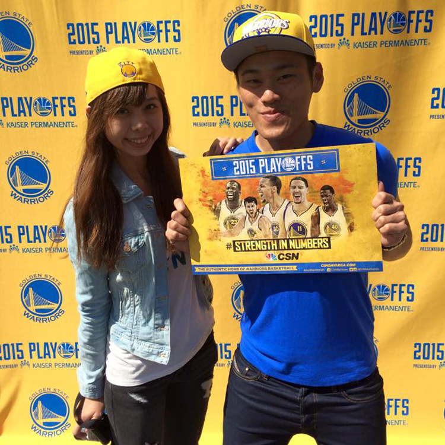
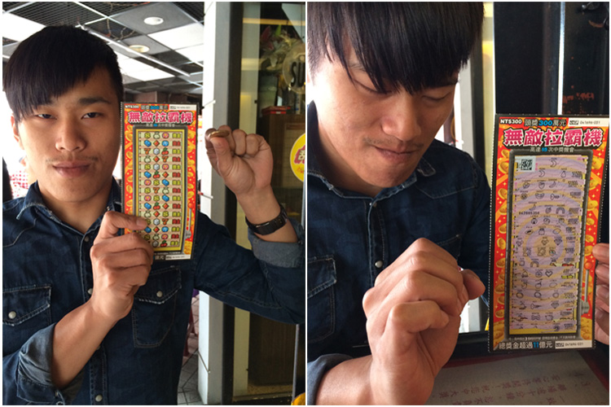
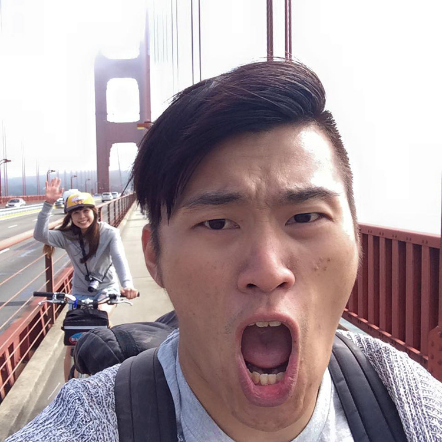

從第一次見面到今年，我跟Karma認識了16年並一起牽手了15年。任何人對於這樣的情況無不佩服Karma怎麼這麼厲害，可以跟一個講話這麼直接、個性這麼坦白又超喜歡強迫自己挑戰的人在一起這麼久。非常感謝你能這麼包容我的脾氣與做人做事的方法，也非常支持我的興趣與個性，常常在我心情與脾氣不好的時候讓我能有轉換心情的機會。
這一路走來我們去過很多地方也看過很多事情，感謝你沒有放掉我們牽著的那雙手，讓我們可以再繼續地往下走。2014年送你離開日本後，我就決定要花半年的時間準備求婚的影片與活動，準備了誓約給這位與我牽手渡過一半人生的你。
認識我的人都知道我是出了名的地獄倒霉鬼，比賽買哪隊贏那一隊就會輸到脫褲、彩卷只要摸到整本所屬的任何一張都不會中獎、甚至連碰過的專案都會出現莫名的非人為問題，只能用慘絕人寰來形容。
但，如此不幸的我卻能有一個陪伴我15年都不曾離開的另一半幫助我實在是人生中最幸運的一件事情。每當我有遇到困難與麻煩時，雖然不能幫我直接解決問題但都能陪伴我一一渡過每個關卡，就好像風見與阿拉斯一樣，我們有著完美的默契去接受任何挑戰！
2016年，新的旅途正在等著我們去挑戰呢！衝吧，阿斯拉
